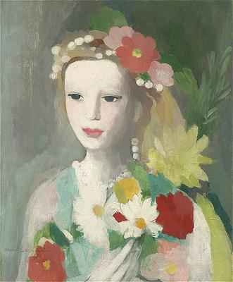
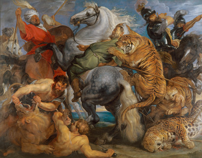
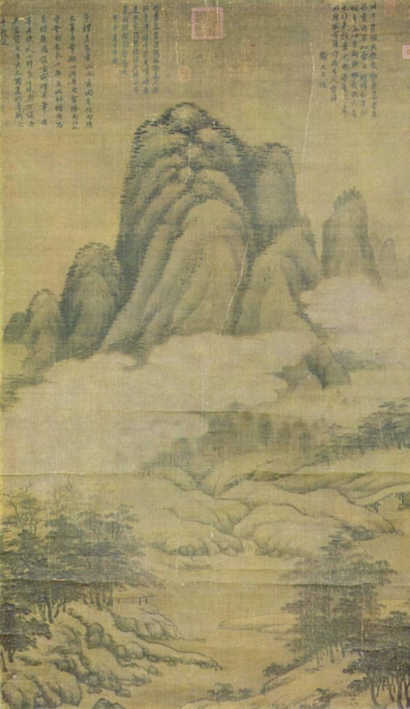

Живопись и Скульптура:
Больше примеров Инь и Ян элементов можно увидеть в живописи и скульптуре. Живопись сама по себе склоняется к Инь в искусстве из-за текучих свойств краски и мягкости кисти. Мы вспоминаем картины, в которых присутствуют инь-женщины: хрупкие фигуры Боттичелли, тонкие и нежные лица в творчестве Леонардо и в работах Мари Лорансен, и картины, где есть бледные девушки с детскими лицами. Большой вклад в общее впечатление от мягкости и деликатности изображения вносит цвет. Никаких резких контрастов, никаких тяжелых или сверкающих оттенков; только едва заметные, приглушенные, светлые тона.


Однако, цвет может выражать и Ян, если находится в руках таких мужественных художников, как Тинторетто, Рубенс, Халс и многих из модернистов.



Посмотрите на портреты женщин эпохи Возрождения (Ренессанс). Начиная с левой картины, Инь переходит в Ян (правая картина), обратите внимание как меняется выражение лица, взгляд, наклон головы, характер одежды.
В восточном искусстве мы видим совершенство красоты в непревзойденных линиях, цветах и формах. В китайской живописи периода Сун (960 - 1279 гг.) художники стремились объединить Инь и Ян для достижения сущности великолепия природы, которое выражалось в резонирующих скалах, величественных деревьях, мощных водопадах, т.е. в элементах неба. Человек - элемент земли, всегда присутствовал для контраста в той или иной форме.


Баланс противоположных качеств присутствует и в скульптуре. В древнегреческих скульптурах элементы Инь и Ян четко выкристаллизовываются, а не смешиваются, как в китайском искусстве.
“Танцовщица”, светлая и плавная, невысокого роста, с изящными изгибами, - это в основном Инь, а в “Юноне, Гера Самос” точные, контролируемые, величественные линии, - это Ян, глубоко укоренившийся в ее молчаливом достоинстве.
| ИНЬ | ЯН |
|---|---|
 |
Камень является символ женской власти, которая таится в молчаливом и спокойном достоинстве, возможно, потому что камень, его среда, по сути Ян. Если бы “Танцовщица”, изящно вырезанная в барельефе, была бы нарисована красками на стене или холсте, то привносила бы еще больше грации и легкости. Тогда бы и цвет повысил значение изображения (добавил легкости), как музыка, что сопровождает ее быстрый и изящный ритм.
Костюмы прошлых лет:
Костюм, раскрытый в картинах, резьбе и гобеленах прошлого, тоже рассказывает историю Инь и Ян. Чаще всего это был Ян, который доминировал в образе. Правительницы Египта были одеты в царские длинные одежды с широкими ожерельями и браслетами из драгоценных камней. Скульптурный портрет Нефертити дает представление о том, как выражался Ян в костюме тех времен.

Одежда женщин Средневековья отличалась насыщенностью красок и, хотя она менее строгая и формальная, также подчеркивала благородство (Ян). Прекрасные мантии, вуали, свисающие с золотых корон, и длинные рукава, дают представление о грации и царственной осанке носивших их особ.

В дверных проемах Шартрского собора можно увидеть правителей Иудеи в средневековой одежде, вырезанных из камня в виде колонн (Ян в строгой форме), и длинные мантии, выполненные в смягченном виде резьбы.
Впрочем, в таких маленьких резных фигурках, как “Дева” (XIV в), кажется, что художники Средневековья показывали величественный костюм и в Инь-манере. Если бы у “Нефертити” была мантия с жесткими складками, то она добавила бы ещё больше янского влияния в образ правительницы Египта, мантия же “Девы” с изящной, изогнутой драпировкой, которая перекликается с природой самой Девы.
Мягкость Инь и сила Ян четко представлены в выражении лиц и в головных уборах:
| ИНЬ | ЯН |
|---|---|
 |
Пока в общей картине костюм Средневековья, Ренессанса и древних времен преобладал Ян, в деталях же открывается Инь-влияние. Мягкая вуаль - это Инь по цвету и текстуре. В эпоху позднего Возрождения Инь отчетливо проступает в прическах, а также в разнообразии изогнутых или присборенных форм горловины, украшенных вышивкой.
В девятнадцатом веке Инь господствовал в полной мере. Фишю (кружевная косынка), кружева, ленты, форма рукавов, чепчики и пышные юбки времен Марии-Антуанетты добавляли женщинам больше пикантности и деликатности, чем в дни Карла Великого.
| ИНЬ | ЯН |
|---|---|
 |
В девятнадцатом веке на юге США люди носили Инь-костюмы (Роялисты придерживались светлых, веселых стилей Франции и Англии), а на севере - Ян-костюмы (Пуритане предпочитали строгость).
| ИНЬ | ЯН |
|---|---|
Сегодня нам нужно разнообразие Инь и Ян элементов в модном секторе. Каждый сезон мы видим и мягкость и строгость, одежду для юных особ и для благородных дам, все это призвано расширить и выразить в полной мере индивидуальность. (ничего не изменилось с 30х годов прошлого столетия :))
Музыка:
Музыка раскрывает нам отчетливые доказательства присутствия Инь и Ян. Деликатная странность ритма у Дебюсси и мощный размах темпа у Бетховена, оба представляют нам два противоположных полюса музыки. Бах, Брамс и Вагнер - это Ян по своему масштабу и концепции, а Шопен, Григ и Мак-Доуэлл - утонченные образчики Инь.
Если вспомнить театральные или опереточные образы, то Инь - это Миньон (Т. Амбруаз) и Мими (Богема, Дж. Пуччини), а Ян - Аида (Дж.Верди) и Брюнхильда (Кольцо нибелунга, Р.Вагнер).
Окружающие вещи:
Распознавание Инь и Ян в скором времени станет квестом, который будет дарить вечный интерес и удовольствие в повседневной жизни. Инь и Ян элементы могут быть найдены и в вещах, построенных человеком и для человеческих нужд: в изящных яхтах и крепких буксирах, в искусных часовых механизмах и мощных генераторах.
| ИНЬ | ЯН |
|---|---|
 |
|
 |
В мебели тоже встречается Инь и Ян:
| ЯН | ИНЬ |
|---|---|
 |
Надеюсь вы поняли концепцию и определили к какому элементу относится диванчик, а к какому элементу - кресла.